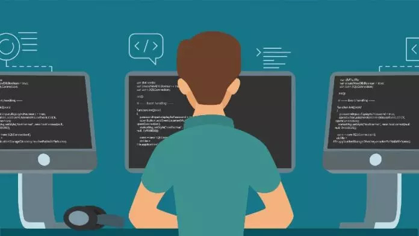

Meus Trabalhos
Descrição
Meus primeiros projetos rementem as minhas capacitações de trainee na Asimov, onde pediram para realizar a montagem de um portfólio (que serviu para a montagem deste) e um aplicativo de contagem, sendo possível aumentar ou diminuir até um certo valor pré-estabelecido. Após minha capacitação, participei de meu primeiro projeto dentro da EJ, onde realizei (junto com minha dupla) a criação de um sistema de gerencimento interno para um restaurante/lanchonete. Dentro do software de gerenciamento tinhamos as seguintes abas: estoque, comandas, faturamento, delivery, gráficos, entre outros. Foi um projeto grande que no fim acabou ainda com uma integração de uma balança com o sistema da comanda, para anotar o peso do prato. O projeto foi todo realizado utlizando JavaScript e o Angular, para vídeos e fotos sobre este trabalho desenvolvido, clique aqui.
Além dos projetos realizados para a Asimov Jr, também realizo projetos durante minhas capacitações na plataforma alura, onde cada etapa do curso tem-se algo a ser desenvolvido com a ajuda dos professores, porém temos total liberdade para alterarmos as ideias e criarmos o que desejarmos utlizando o conhecimento adquirido durante o curso, deste modo já realizei a criação de alguns jogos, sites e até mesmo testes automatizados utilizando o Cypress.
Todos os meus trabalhos podem ser vizualizados acessando meu Github, clicando aqui.
← Voltar ao portfólio